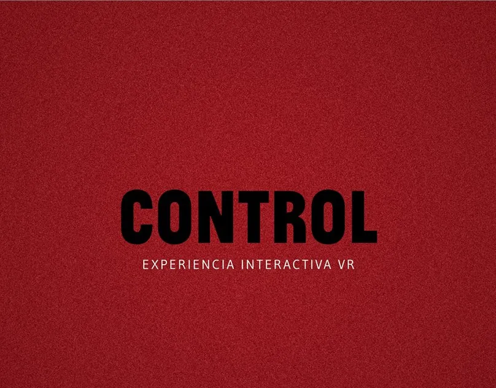
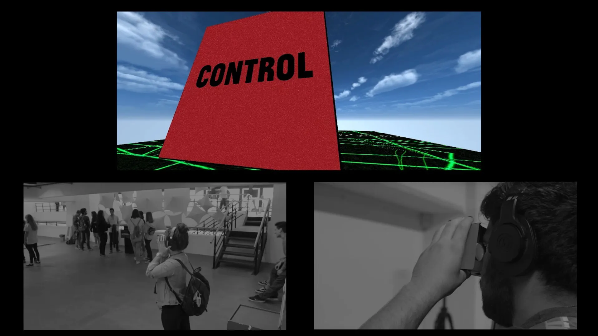

00:00:03:00Interactive installation
Control
An interactive virtual reality installation, conceived as an open work that each visitor completes.
- Category
- Interactive installation
- Year
- 2023
- Tools
- Virtual reality
This project revolves around the creation of an interactive virtual reality installation, which we propose as an open work of art, wherein each user will experience it in a unique way, based on their individual interpretation.
By leveraging the immersive and interactive nature of virtual reality, our installation seeks to transport users into an alternate reality, where they can engage with the artwork in a deeply personal and meaningful way.
Through a range of sensory stimuli, from the tactile to the cerebral, our installation aims to evoke a range of emotional and cognitive responses, from immediate visceral reactions to prolonged and contemplative reflection.
Ultimately, we aim to create a dynamic and transformative experience that will leave a lasting impression on users, encouraging them to engage with art in new and exciting ways.




NextDocumentary / Branded content
Weritage →